I BUILT A MEAN GAME ON PURPOSE.
LEVEL SURE
2D pain in front. A sick little 3D void behind it. I made the floor lie on purpose.
- Touch the real door
- Die a lot (sorry)
- Unlock 20 worlds
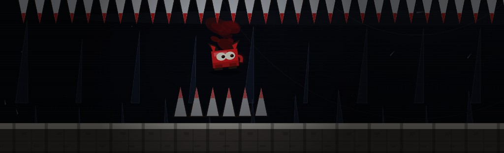
THE DEAL
One rule that doesn't lie: touch the real door and the room is done. Everything else is me messing with you.
- Door E Gold roof, red door. That's the exit. I promise. This time.
- Fake F Looks the same. Isn't. In KNOCK KNOCK I put the joke on the right and the real exit up left, because I'm petty.
- Rooms 15+D Nullscape has 16 rooms. Last Light has 35. Beat a world and the next one wakes up. I counted. Twice.
- Death ☠ You die, I roast you, same room again. The death count sticks. I wanted that number to haunt you a little.
- Save v3 Saved in this browser under level-surge-v3. Deaths, time, shards, how far you got. Clear your data and I forget you existed.
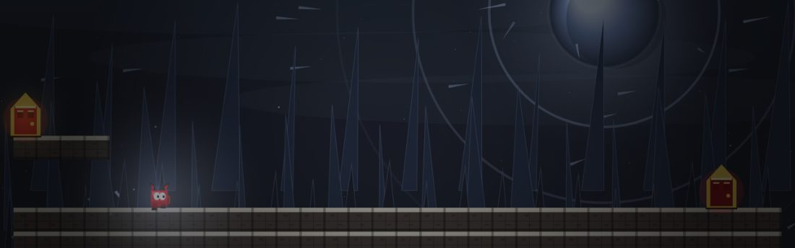
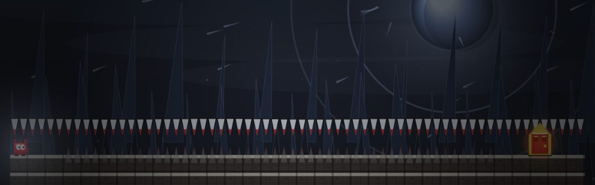
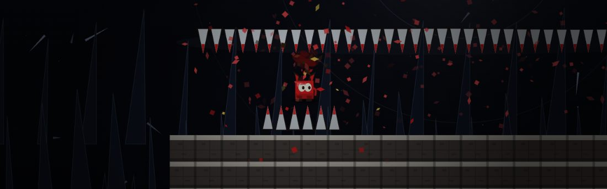
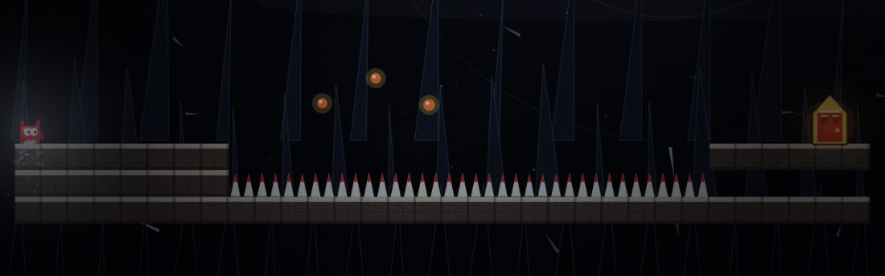
KEYS
Keyboard on a computer. Buttons on a phone. Dash shows up in Frostbite (D3) because I got tired of people stuck on ledges.
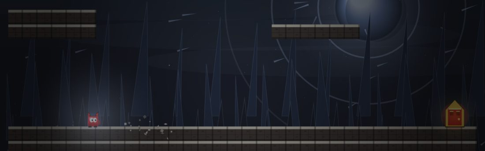
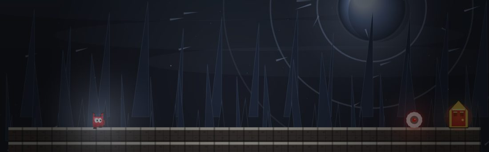
THE BAR
The top bar is the only narrator. It even lies about trap count until something real fires. I did that on purpose. Petty? Yes.
Stays question marks until a real trap fires. Dust and glow don't tick it. I wanted that little dread in your stomach.
Name, number, pips. Lit pip is where you are. Red pips are rooms you already got through. Wear them.
Survive traps inside 2.4 seconds and it stacks. Hit ten and it prints SURGE x79437924 like a maniac. Die and it's gone. I know. Mean.
Gold coins. In SHINY and LAST LAUGH they blow up. Everywhere else they're safe. I still go for them. I can't help it.
How long this world run has lasted, and how many times the room beat you. That second number hurts more.
Full clear: 79,437,924 × (90 − deaths) × (260 − seconds). Neither factor goes under 1. I save your best score next to your worst deaths. Romantic.
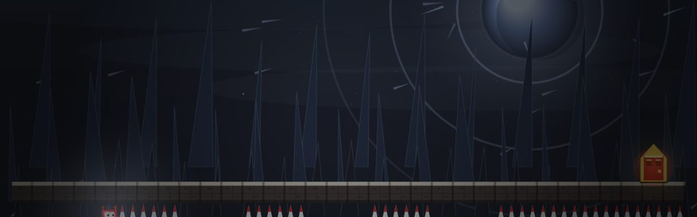
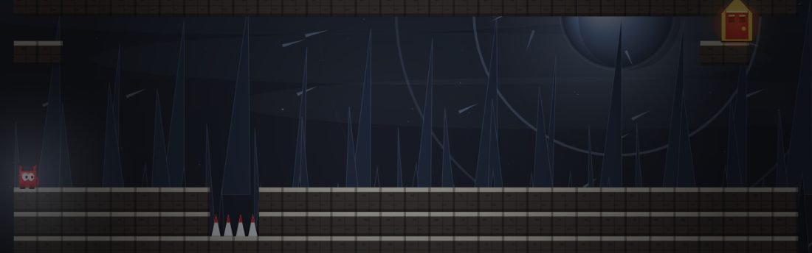
NULLSCAPE
Dimension 1 is handmade. I placed every trap. Sixteen rooms, ten traps each. Later worlds come from a seed — same seed, same pain — but they aren't these rooms. These ones I made angry.
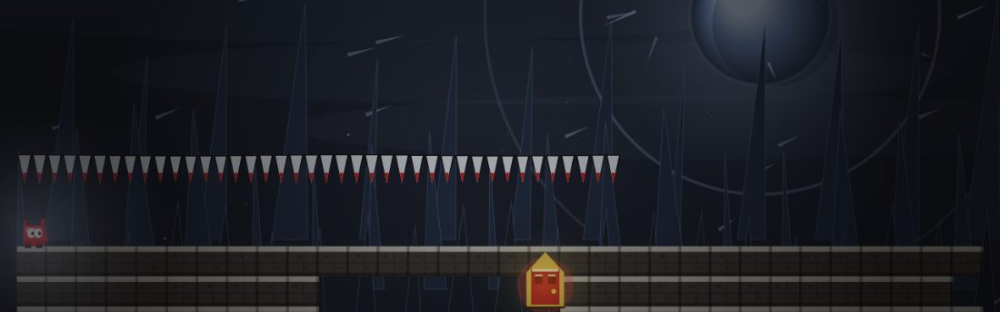
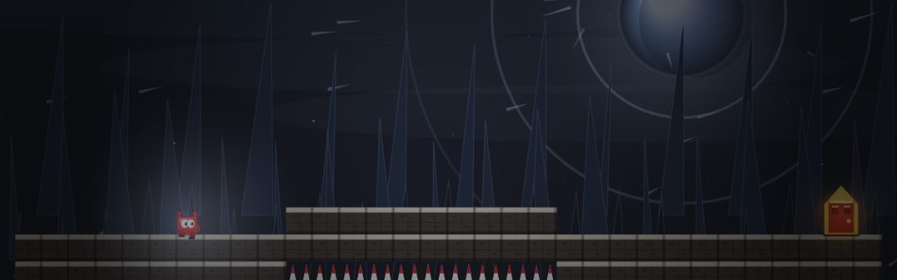
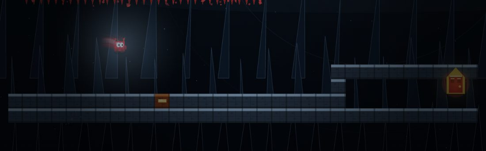
TWENTY WORLDS
From D2 on, the last room is a core: four extra traps and a fake door. Trap count starts at 10, then each world adds the old climb plus 10 more. Rooms grow by 5 blocks every world. From Dimension 10 the cruel traps stop being rare. Each world still gets two signature traps that only live there. I wanted every world to feel like a different kind of bad mood.
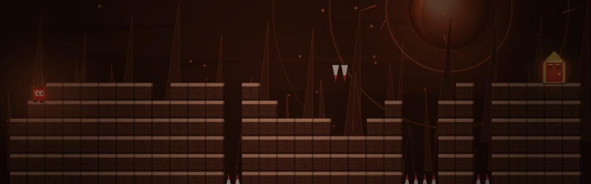
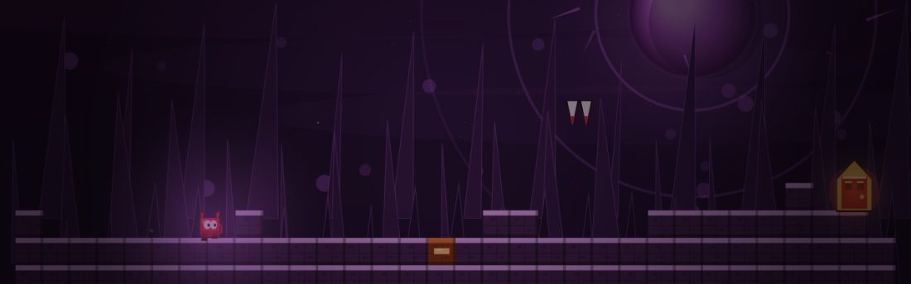
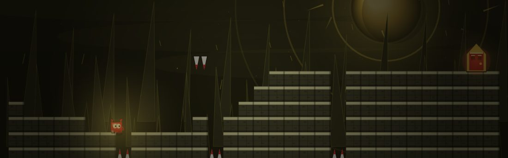
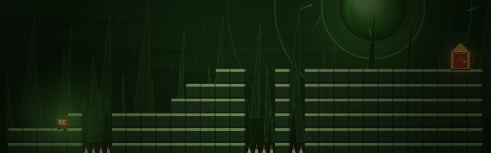
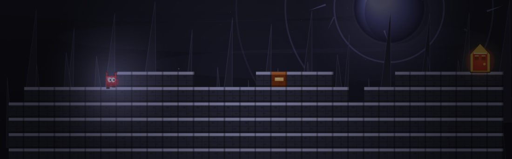
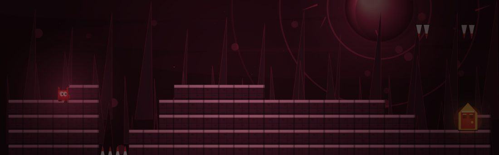
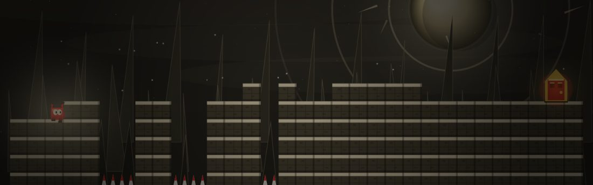
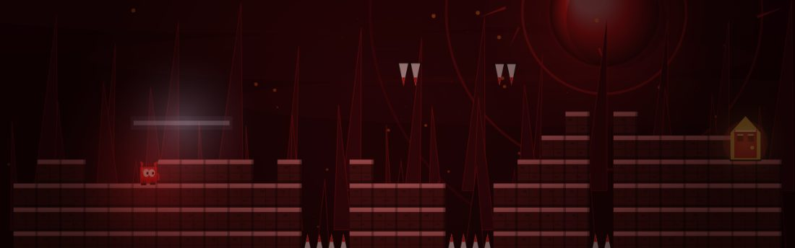
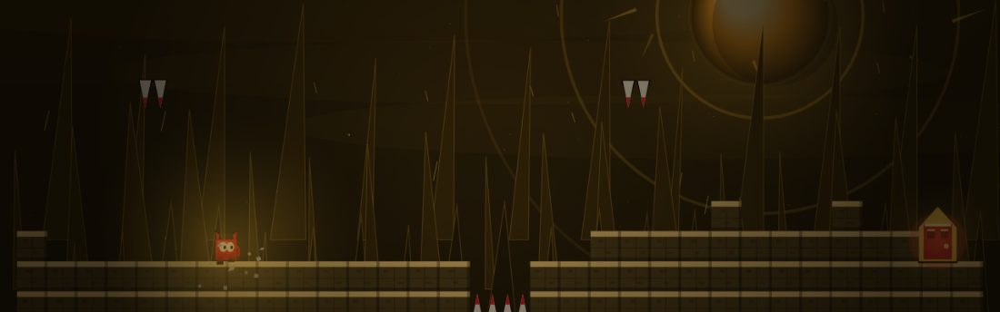
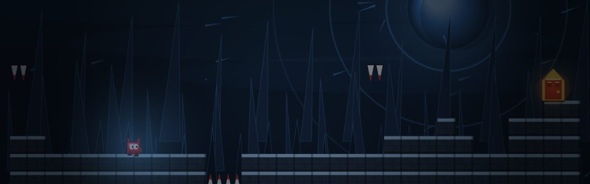
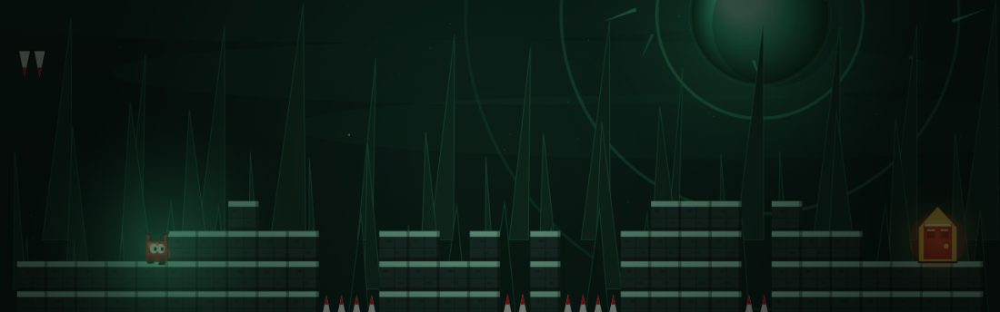
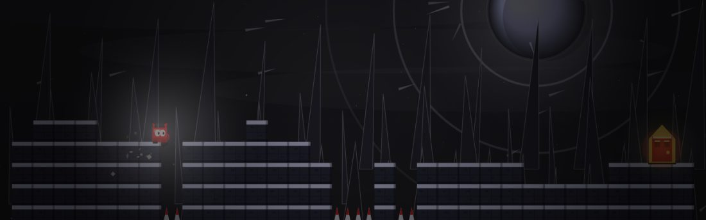
THE MARKS
A room is a tile grid plus a list of traps. These are the tiles. Dust and fake beams don't build SURGE — they're just me whispering "maybe?" in your ear.
#Solid floor or wall. The rare honest tile.
=Looks like brick. Crumbles when you stand on it. I put these where you want to rest.
*Painted brick. You walk through it and feel dumb. That's the point.
iSolid and invisible. FALL IN hides the door behind some. I know. Evil.
^Spikes up from the floor. Pointy. Unfair. Mine.
vSpikes down from the ceiling. Same teeth, worse angle.
BBounce pad. YEET's has opinions, then gravity gets soft. My stomach drops every time.
!Hidden teeth in the floor. Tiny glint if you're lucky. Most people aren't.
oSaw. Sits still, arrives late, or decides it likes you. I gave it a personality. Mistake.
CA shard. In SHINY and LAST LAUGH, greed kills. I still grab them. I'm weak.
EThe real exit. Touch it. Leave. Feel relief for two seconds.
FA door that isn't the exit. Traps wait for you to touch this. I wait with them.
WHAT FIRES
A trap waits for something you do, then answers. Sometimes late, so you think you're safe. You're not. That delay is me being funny on purpose.
IT WAITS
- WalkYou pass a column. Most of the game is this. Walking into my bad ideas.
- JumpToo soon, too early, or just because you jumped. I punish hope.
- StillDON'T STOP drops the floor if you hesitate. 0.4 seconds of standing and it's gone. Keep moving. Please.
- DoorThe fake one. PSYCH and LAST LAUGH start the long walk home here. My favorite betrayal.
- TimeWAIT FOR IT holds the ceiling for 1.9 seconds, then the floor teeth turn into brick. Patience. Or don't.
IT ANSWERS
- HoleBrick gone, spikes under. Sometimes the spikes pop back into floor. I like that little hope-crush.
- TeethA row from the ceiling, or one spike under a door. Small. Personal.
- SawFrom offscreen, on a delay, or chasing once BUZZ wakes it. I hear the beep in my sleep.
- BeamA real laser, or a glow that means nothing. The glow is quiet. The glow is a liar. Like me.
- LieControls flip. A shove. The door moves. Gravity reverses. A brick falls. Pick your heartbreak.
SOUND
This page plays the classic browser-built mix — the one the game used before every dimension got its own engine. Tap once to unlock it.
- Classic 96 bars Shared drums, pads, and lead. Roots and tempos still follow the world cycling behind you. The in-game worlds now sound nothing like this on purpose.
- Root Hz The chord follows the world's root note. Nullscape sits at 92.5. I got weird about this.
- Mute 🔊 Speaker in the top bar. Same place energy as the in-game mute, without the trap heat.